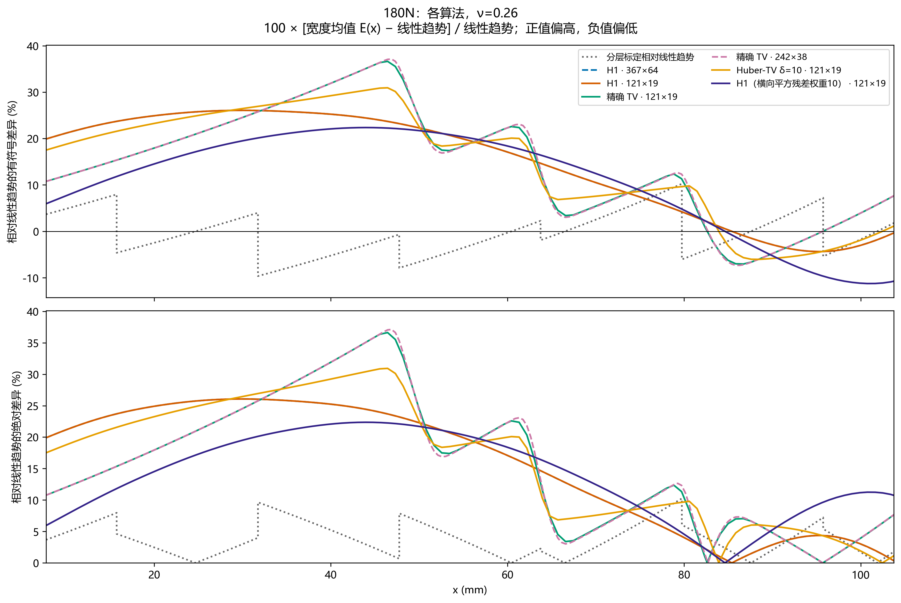
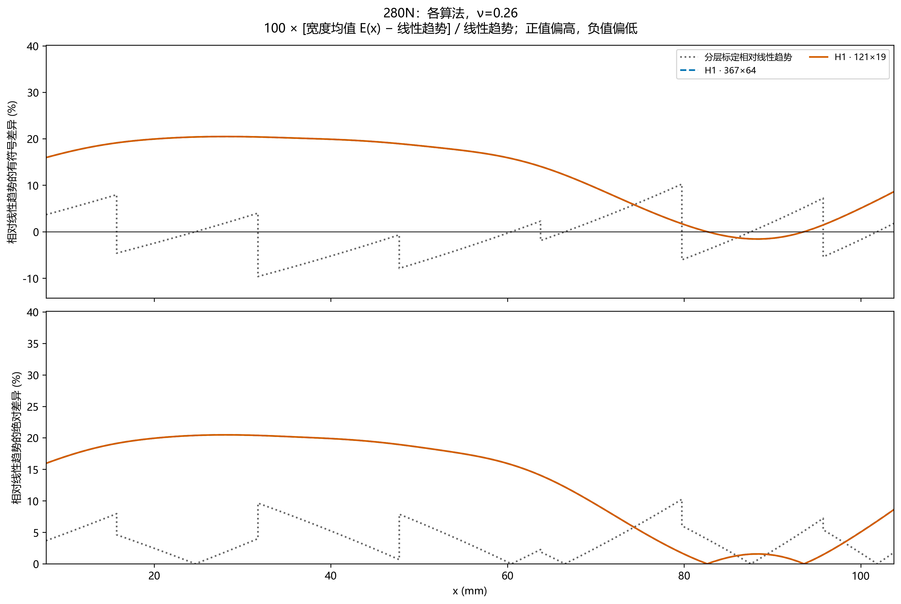
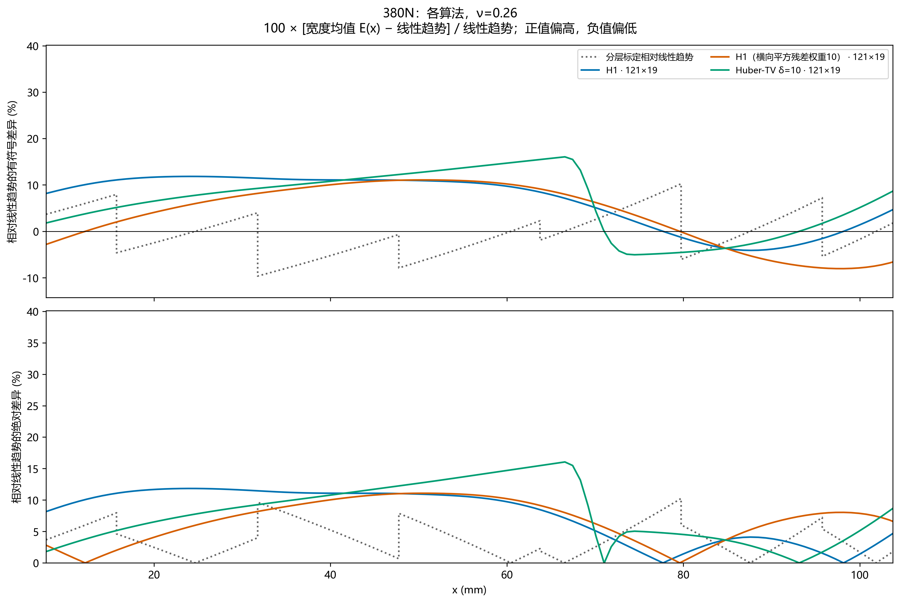
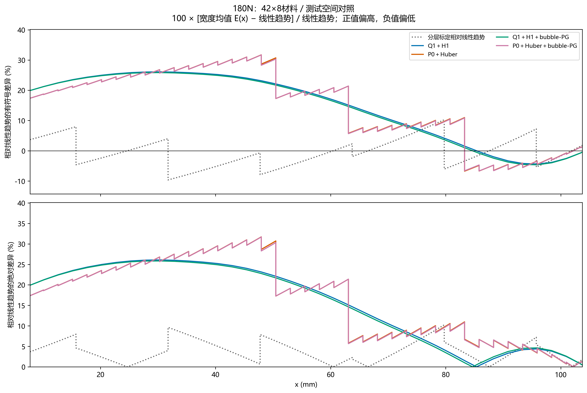
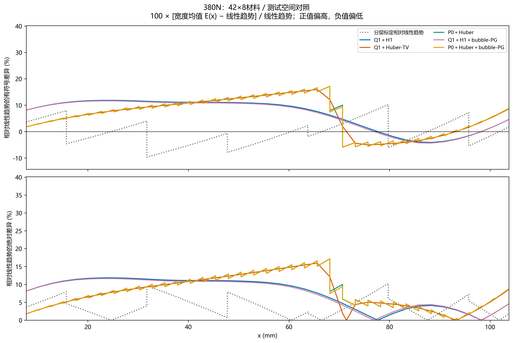

紫色点划线：七组独立标定均值等权线性趋势，仅作事后参照；不是连续材料实测真值，不用于反演、初值、选γ或修改独立标定正演。阶梯与灰带仍表示实际分层标定均值及试样间SD。
趋势沿用既有混合批次 independent 口径：七组均值等权拟合 E=a+b p。p(x) 由原六个材料界面与相邻填充率中值确定；不按 ROI 两端重新等分，不在 40%—100%以外外推。该连续坐标只是趋势比较约定，不代表试样实际连续制造。跨批桥接、物理配准和边界近似限制仍保留。
按识别载荷分别展示，ν=0.26；γ 均保留原选参结果。色带为横向空间离散，不能作为置信区间。380N 使用假定净力319.9 N；不同方法的网格、权重和预算见图例及原结果，不能据此作严格同条件排名。
有符号差异 = 100 × [反演宽度均值 − 线性趋势] / 线性趋势；下图同时给出绝对值。仅比较原40%—100%标定范围，所有正式对照图共用纵轴。灰色虚线表示实际分层标定自身偏离该直线的程度。这里的“误差”是对辅助趋势的差异，不是未知实验真值的误差；不同网格、权重和预算不据此作严格同条件排名。380N仍采用假定净力319.9 N。





汇总量按相同物理长度加权，逐单元／分段积分；不把不同网格的节点数当作权重。正负偏差不相互抵消的评价见平均绝对差异和相对RMS。未选γ的统一算法失败诊断未混入此表。
| group | method | role | 平均有符号差异(%) | 平均绝对差异(%) | 相对RMS(%) | support_start_x_mm | support_end_x_mm |
|---|---|---|---|---|---|---|---|
| 180N：各算法，ν=0.26 | 分层标定相对线性趋势 | layered_calibration_reference | -0.4207 | 3.7586 | 4.5193 | 7.7473 | 103.7473 |
| 180N：各算法，ν=0.26 | H1 · 367×64 | selected_inverse | 14.6094 | 15.6979 | 18.2816 | 7.7473 | 103.7473 |
| 180N：各算法，ν=0.26 | H1 · 121×19 | selected_inverse | 14.6097 | 15.6994 | 18.2830 | 7.7473 | 103.7473 |
| 180N：各算法，ν=0.26 | 精确 TV · 121×19 | selected_inverse | 14.4826 | 15.6058 | 18.6530 | 7.7473 | 103.7473 |
| 180N：各算法，ν=0.26 | 精确 TV · 242×38 | selected_inverse | 14.5094 | 15.6478 | 18.7149 | 7.7473 | 103.7473 |
| 180N：各算法，ν=0.26 | Huber-TV δ=10 · 121×19 | selected_inverse | 14.7457 | 16.3075 | 18.9292 | 7.7473 | 103.7473 |
| 180N：各算法，ν=0.26 | H1（横向平方残差权重10） · 121×19 | selected_inverse | 10.8664 | 13.8832 | 15.3013 | 7.7473 | 103.7473 |
| 280N：各算法，ν=0.26 | 分层标定相对线性趋势 | layered_calibration_reference | -0.4207 | 3.7586 | 4.5193 | 7.7473 | 103.7473 |
| 280N：各算法，ν=0.26 | H1 · 367×64 | selected_inverse | 12.6324 | 12.8689 | 14.9474 | 7.7473 | 103.7473 |
| 280N：各算法，ν=0.26 | H1 · 121×19 | selected_inverse | 12.6320 | 12.8682 | 14.9480 | 7.7473 | 103.7473 |
| 380N：各算法，ν=0.26 | 分层标定相对线性趋势 | layered_calibration_reference | -0.4207 | 3.7586 | 4.5193 | 7.7473 | 103.7473 |
| 380N：各算法，ν=0.26 | H1 · 121×19 | selected_inverse | 6.5540 | 7.6713 | 8.6661 | 7.7473 | 103.7473 |
| 380N：各算法，ν=0.26 | H1（横向平方残差权重10） · 121×19 | selected_inverse | 3.6729 | 6.7088 | 7.4813 | 7.7473 | 103.7473 |
| 380N：各算法，ν=0.26 | Huber-TV δ=10 · 121×19 | selected_inverse | 6.1995 | 7.7827 | 8.9829 | 7.7473 | 103.7473 |
| 180N：42×8材料／测试空间对照 | 分层标定相对线性趋势 | layered_calibration_reference | -0.4207 | 3.7586 | 4.5193 | 7.7473 | 103.7473 |
| 180N：42×8材料／测试空间对照 | Q1＋H1 | selected_inverse | 14.6110 | 15.7087 | 18.2924 | 7.7473 | 103.7473 |
| 180N：42×8材料／测试空间对照 | P0＋Huber | selected_inverse | 14.7564 | 16.4438 | 19.0271 | 7.7473 | 103.7473 |
| 180N：42×8材料／测试空间对照 | Q1＋H1＋bubble-PG | selected_inverse | 14.2889 | 15.4982 | 18.0657 | 7.7473 | 103.7473 |
| 180N：42×8材料／测试空间对照 | P0＋Huber＋bubble-PG | selected_inverse | 14.7034 | 16.4007 | 18.9864 | 7.7473 | 103.7473 |
| 380N：42×8材料／测试空间对照 | 分层标定相对线性趋势 | layered_calibration_reference | -0.4207 | 3.7586 | 4.5193 | 7.7473 | 103.7473 |
| 380N：42×8材料／测试空间对照 | Q1＋H1 | selected_inverse | 6.5512 | 7.6712 | 8.6697 | 7.7473 | 103.7473 |
| 380N：42×8材料／测试空间对照 | Q1＋Huber-TV | selected_inverse | 6.1849 | 7.7244 | 8.9208 | 7.7473 | 103.7473 |
| 380N：42×8材料／测试空间对照 | P0＋Huber | selected_inverse | 6.2140 | 7.8929 | 9.0593 | 7.7473 | 103.7473 |
| 380N：42×8材料／测试空间对照 | Q1＋H1＋bubble-PG | selected_inverse | 6.3040 | 7.5406 | 8.5013 | 7.7473 | 103.7473 |
| 380N：42×8材料／测试空间对照 | P0＋Huber＋bubble-PG | selected_inverse | 6.1806 | 7.8708 | 9.0314 | 7.7473 | 103.7473 |


| run | platform | method | status | selected_gamma |
|---|---|---|---|---|
| results\dic_full | 180N | H1 · 367×64 | computed | 3.906940e-09 |
| results\dic_full\coarse | 180N | H1 · 121×19 | computed | 3.906940e-09 |
| results\dic_full\exact_tv_coarse_20261021 | 180N | 精确 TV · 121×19 | interrupted_for_solver_diagnosis | NaN |
| results\dic_full\exact_tv_coarse_pd_20261021 | 180N | 精确 TV · 121×19 | computed | 1.264855e-07 |
| results\dic_full\exact_tv_refine_242x38_20261021 | 180N | 精确 TV · 242×38 | computed | 1.264855e-07 |
| results\dic_full\h1_280N_independent_20261022 | 280N | H1 · 367×64 | computed | 1.757511e-08 |
| results\dic_full\h1_280N_independent_coarse_20261022 | 280N | H1 · 121×19 | computed | 1.757511e-08 |
| results\dic_full\load380_20261022\exact_tv | 380N | 精确 TV · 121×19 | l_curve_insufficient_corner_support | NaN |
| results\dic_full\load380_20261022\exact_tv_fine | 380N | 精确 TV · 242×38 | l_curve_insufficient_valid_points | NaN |
| results\dic_full\load380_20261022\h1 | 380N | H1 · 121×19 | computed | 3.727594e-08 |
| results\dic_full\load380_20261022\h1_uy10 | 380N | H1（横向平方残差权重10） · 121×19 | computed | 7.906043e-08 |
| results\dic_full\load380_20261022\huber1 | 380N | Huber-TV δ=1 · 121×19 | l_curve_no_resolved_corner | NaN |
| results\dic_full\load380_20261022\huber10 | 380N | Huber-TV δ=10 · 121×19 | computed | 2.559548e-06 |
| results\dic_full\tv | 180N | Huber-TV δ=1 · 121×19 | l_curve_no_resolved_corner | NaN |
| results\dic_full\tv\delta10 | 180N | Huber-TV δ=10 · 121×19 | computed | 1.264855e-07 |
| results\dic_full\uy10 | 180N | H1（横向平方残差权重10） · 121×19 | computed | 8.286428e-09 |
无有效 γ 的方案未补指定正式识别曲线。合成真值测试与历史不同域结果未混入本实验趋势比较。
42×8位移单元；180N和380N分别扫描选参。失败方案保留原注记，P0曲线保持单元常值。

以下三条均为预先指定的失败诊断，不与已选参结果作精度排名；不改变仿真进入条件未通过的结论。